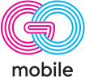

הצעת פרויקט
מערכת תורים לסניף אילת שעושה שני דברים: מנהלת את התור עצמו — כרטיס, מיקום, זמן המתנה והודעה כשמגיע התור — ומזהה את מי שנרשם לתור ועזב לפני שהגיע תורו, כדי לחזור אליו.
כל הנתונים להלן נמדדו ממערכת המכירות שלכם, על פני 60 הימים האחרונים.
העומס באילת אינו נקודתי אלא רציף — כ-10 עד 15 קבלות בשעה, לאורך שלוש-עשרה שעות פעילות רצופות, מ-06:00 עד 20:00. שעות השיא הן 11:00, 08:00, 09:00 ו-18:00.
עם 4–5 עמדות וזמן טיפול אופייני של 15 עד 30 דקות, הסניף נמצא בתפוסה מלאה ברוב שעות היום. זהו בדיוק המצב שבו נוצרות המתנות, נשבר סדר ההגעה, ולקוחות עוזבים.
מסך — קיים או חדש — המציג את המספר המטופל בכל עמדה ואת המספרים הבאים, בעברית, עם צליל התראה בכל שינוי בתור.
בטלפון או בטאבלט של הנציג: קריאה ללקוח הבא, קריאה חוזרת, סימון אי-הופעה, העברה לעמדה אחרת והשהיה.
כל כניסה לתור יוצרת או מזהה רשומת לקוח לפי מספר הטלפון. המערכת מפרידה בין שלושה מצבים, שלכל אחד מהם משמעות אחרת:
| המצב | מה קרה | מסלול החזרה |
|---|---|---|
| עזב לפני שנקרא | נרשם לתור ולא המתין עד תורו | הזמנה לשעות שקטות יותר |
| נקרא ולא הגיע | נקרא לעמדה ולא הופיע | פנייה מיידית באותו יום |
| טופל ולא רכש | הגיע לעמדה, ללא קבלה | פנייה מבוססת תחום העניין |
רוב לקוחות אילת הם תיירים. לקוח שעזב מקבל הפנייה לסניף הקרוב לביתו מתוך תשע החנויות ברשת — כך שהביקור באילת אינו הולך לאיבוד.
דוח יומי ושבועי:
לקוח שנרשם לתור עם מספר טלפון שיש לו הזמנה פתוחה באתר — ההזמנה תוצג לנציג, וניתן להתחיל בהכנתה במחסן בזמן ההמתנה.
עלות ההודעות בלבד, משולמת ישירות על ידיכם. בהיקף אילת — כ-13,500 הודעות בחודש:
| הערוץ | עלות חודשית |
|---|---|
| וואטסאפ עם גיבוי SMS — מומלץ | כ-₪100–160 |
| SMS בלבד | כ-₪340–540 |
הודעות וואטסאפ הנשלחות בתוך 24 שעות מפניית הלקוח אינן כרוכות בתשלום. מכיוון שהכניסה לתור מתבצעת בסריקת QR הפותחת וואטסאפ — הלקוח הוא היוזם, וכל הודעות התור באותו יום אינן עולות דבר.
לכל הסכומים יש להוסיף מע״מ.
| שבוע | |
|---|---|
| 1 | מנוע התור, אפליקציית העמדה, מסך התצוגה |
| 2 | כניסה לתור, הודעות, איתור הזמנה |
| 3 | הפעלה בסניף אילת, בליווי צמוד |
| 4 | מנוע הלידים, מסלולי חזרה ודוחות |
הודעות תור — ״הגיע תורך״ — הן הודעות שירות ואינן טעונות הסכמה. פניות שיווקיות, כגון הזמנה לשעות שקטות או הטבה, מחייבות הסכמה מפורשת מראש לפי תיקון 40 לחוק התקשורת.
לפיכך מסך הכניסה לתור כולל אישור קבלת הודעות, המערכת מתעדת אותו, וכל פנייה שיווקית כוללת אפשרות הסרה.